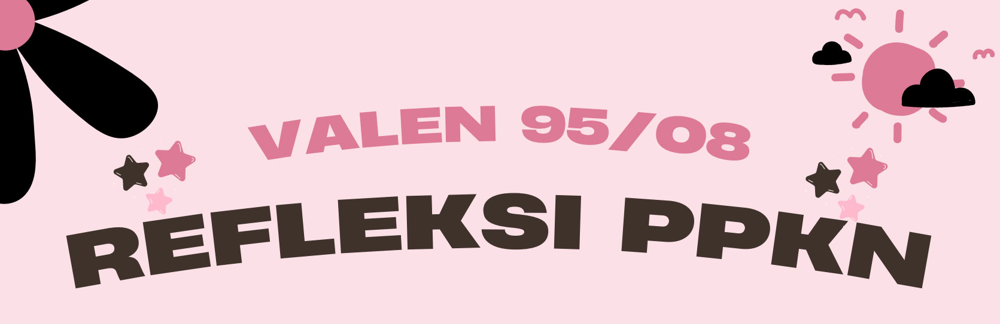

<!DOCTYPE html>
<html lang="en">

<head>
    <meta charset="UTF-8">
    <meta name="viewport" content="width=device-width, initial-scale=1.0">
    <title>Perencanaan Produk</title>
    <link href="https://cdn.jsdelivr.net/npm/bootstrap@5.3.2/dist/css/bootstrap.min.css" rel="stylesheet"
        integrity="sha384-T3c6CoIi6uLrA9TneNEoa7RxnatzjcDSCmG1MXxSR1GAsXEV/Dwwykc2MPK8M2HN" crossorigin="anonymous">
    <link rel="stylesheet" href="https://cdn.jsdelivr.net/npm/bootstrap-icons@1.11.3/font/bootstrap-icons.min.css">

    <link rel="preconnect" href="https://fonts.googleapis.com">
    <link rel="preconnect" href="https://fonts.gstatic.com" crossorigin>
    <link
        href="https://fonts.googleapis.com/css2?family=Dosis:wght@500&family=Nunito:wght@800&family=Protest+Strike&display=swap"
        rel="stylesheet">

    <style>
        .body {
            background-color: #fce0e7;
        }

        .text {
            text-align: justify;
        }

        .text-violet {
            color: #7952b3;
        }
    </style>
</head>

<body class="body">
    
    <div class="container">
        <!-- <h1 class="text-center font-weight" style="color: #3f322b;font-size: 50px;font-family: Verdana, Geneva, Tahoma, sans-serif;"><strong>Refleksi PPKN</strong></h1> -->

        <div class="card mt-4 shadow-lg p-3 mb-5 rounded-3" style="border: 5px solid #000000; background-color: #f4a5bd;">
            <div class="card-body" style="padding: 40px;font-size: 30px;font-family: Verdana, Geneva, Tahoma, sans-serif;">
                <p class="text">Dalam perencanaan bazaar kami, kami mengawalinya
                    dengan mencari ide untuk apa yang akan dijual. Setelah
                    menemukannya, kami mulai membagi tugas untuk proses
                    perencanaan. Kami membagi tugas secara adil,
                    mempertimbangkan bakat dan minat masing-masing
                    anggota.</p>
                <p class="text">Misalnya, jika ada yang menyukai desain,
                    mereka bertanggung jawab membuat logo, dan jika ada
                    yang mahir dalam membuat slogan, mereka yang
                    mengurusnya. Dengan melakukan sistem seperti itu,
                    kelompok kami dapat membagi tugas dengan baik untuk
                    menyelesaikan pekerjaan dengan cepat.</p>
                <p class="text">Kerjasama dalam
                    kelompok kami sudah baik, meskipun mungkin ada
                    sedikit kekurangan, tetapi kami tetap mengerjakan tugastugas yang diberikan dengan baik. Komunikasi
                    dalam
                    kelompok kami juga berjalan baik meskipun kadangkadang mungkin sedikit sulit. Namun, kami tetap
                    bekerja
                    sama dan berkomunikasi dengan baik sehingga
                    pekerjaan dapat diselesaikan.</p>
                <p class="text">Kerjasama itu sangat
                    penting bagi kami. Meskipun mungkin kami kurang dalam
                    kerjasama di awal, kami berhasil memperbaikinya.
                    Menurut saya, kelompok kami sudah lebih baik dalam
                    komunikasi dan pembagian tugas sekarang. Peran dan
                    kontribusi saya dalam kelompok adalah membantu
                    membuat logo, terlibat dalam perencanaan IPA, menjadi
                    bagian dari tim dekorasi, serta membantu dalam
                    pembuatan poster, iklan, dan website.
                </p>


            </div>
        </div>

        <br /><br />

        <div class="card mt-4 shadow-lg p-3 mb-5 rounded-3" style="border: 5px solid #000000; background-color: #f4a5bd;">
            <div class="card-body" style="padding: 40px;font-size: 30px;font-family: Verdana, Geneva, Tahoma, sans-serif;">
                <p class="text">Setelah menyelesaikan perencanaan, kami memulai
                    persiapan bazaar. Kami mulai membeli barang-barang
                    yang akan dijual dan mencoba resep-resep makanan
                    yang akan kami jual.</p>
                <p class="text">Selain itu, kami membuat iklan
                    yang kami promosikan melalui akun Instagram
                    kelompok dan pribadi kami. Kami juga menerima
                    pemesanan sebelum bazaar dimulai. Kami juga
                    mempersiapkan dekorasi untuk booth dan kelas kami.
                    Persiapan bazaar membuat kami sibuk karena banyak
                    hal yang harus dipersiapkan, tetapi pada akhirnya, kami
                    berhasil menyelesaikannya dan siap untuk pelaksanaan
                    bazaar.
                </p>


            </div>
        </div>        
        <a href="../index.html" class="btn btn-lg btn-primary">Kembali ke Homepage</a>
    </div>
</body>

</html>